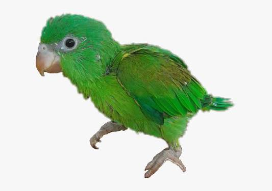

Información general: Puyusa es un perico. Los pericos son aves pequeñas y muy coloridas que pertenecen a la familia de los loros. Tienen un pico curvo, son muy sociables y destacan por su capacidad para imitar sonidos.